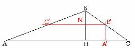

Problema 74
| Dado un triángulo de lados 7 cm, 5 cm, y 3 cm, inscribir un rectángulo de perímetro 8 cm. |
Para que un rectángulo esté inscrito en un triángulo, uno de los lados del triángulo tendrá que contener a dos vértices del rectángulo, y los otros dos lados del triángulo, contendrán cada uno otro vértice del rectángulo.


¿Cómo hallaríamos ahora cual es el rectángulo que nos piden?
Para saber en que punto del lado b hemos de levantar la perpendicular A1B1 o a qué distancia de AC hemos de trazar la paralela C1B1, sabemos solamente que C1B1+ A1B1=4.
Como C1B1 y AC son paralelas, y BH y A1B1 también, vemos que por el Teorema de Tales
y haciendo una paralela a esa distancia de AC se consiguen B1 y C1 en la intersección de esta con AB y BC. Una vez conseguido B1 y C1 los otros vértices del triángulo son inmediatos.